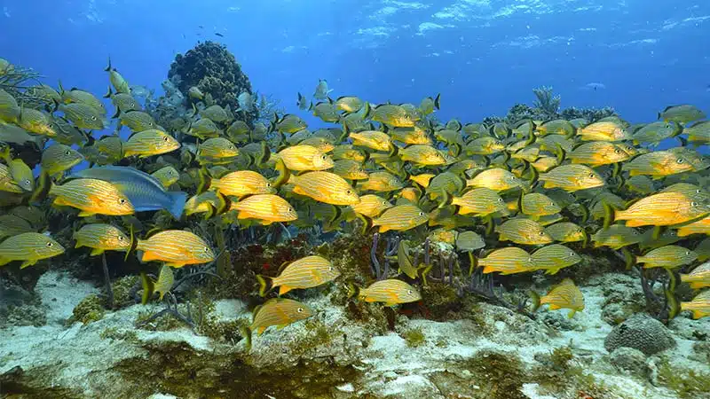
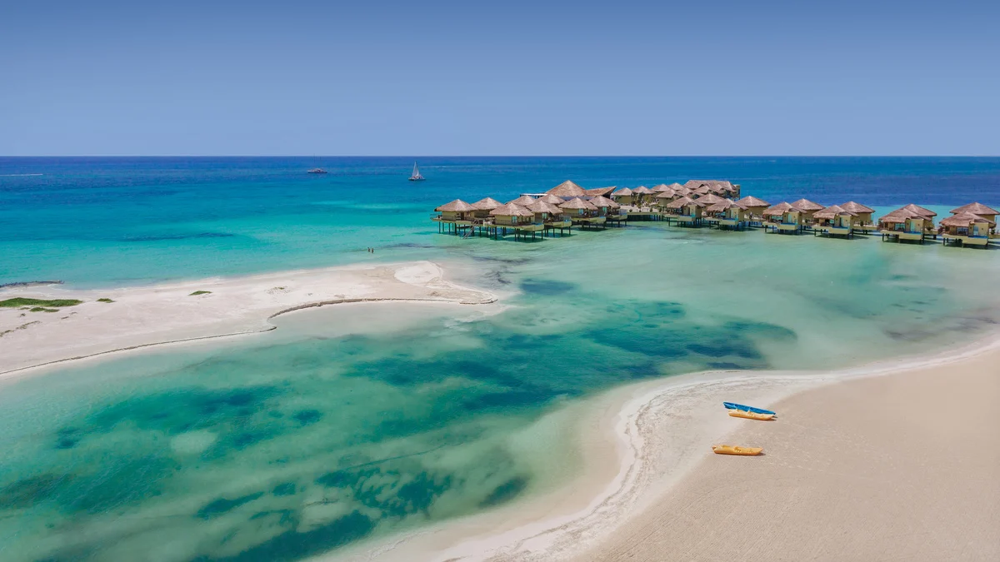
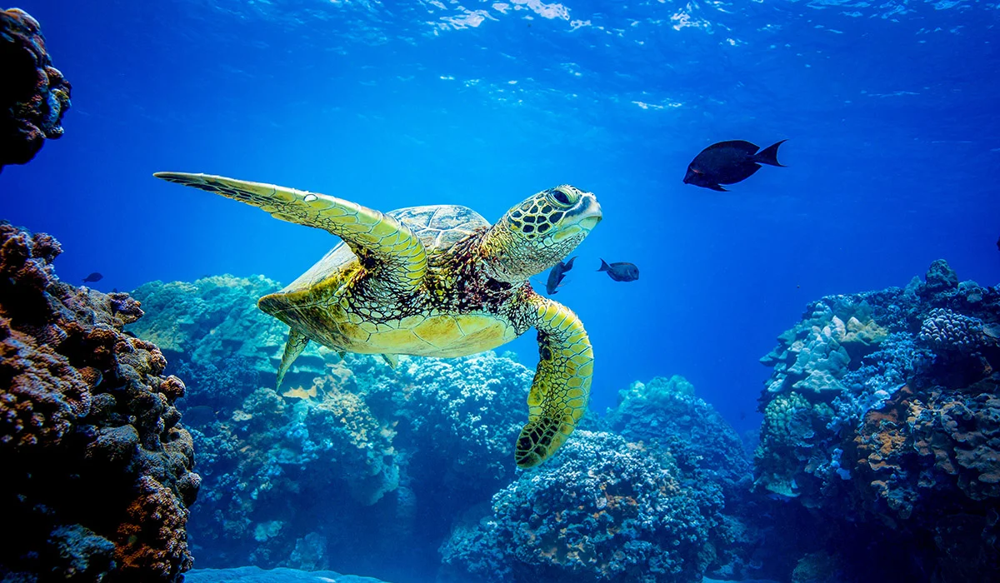
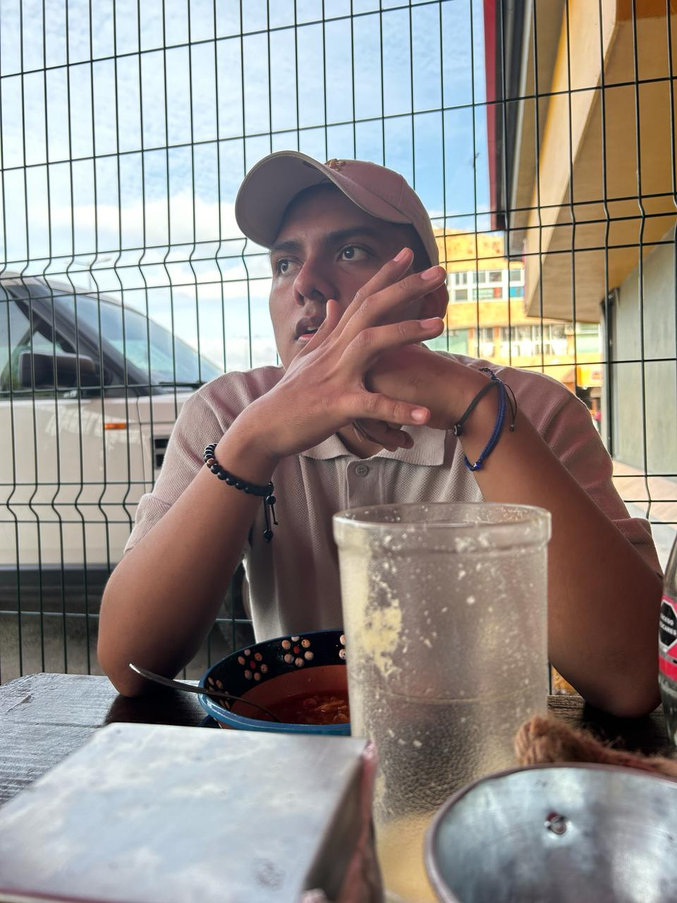

Bienvenido al Voluntariado EM
Protege
la vida marina
Con un enfoque en la acción comunitaria y la conciencia ambiental, nos esforzamos por marcar la diferencia y asegurar un futuro sostenible para nuestras aguas.
Registrate como voluntarioEducación
Colaboración
Investigación
¿Por qué
nosotros?
Los océanos y arrecifes de coral que rodean Playa del Carmen son el hogar de una asombrosa biodiversidad marina y son vitales para la salud de nuestro planeta. Sin embargo, enfrentan amenazas como la contaminación, el cambio climático y la sobrepesca. Es por eso que es crucial tomar medidas para protegerlos y garantizar su supervivencia a largo plazo.
Saber más
Cuida el ecosistema
marino del mundo

Arrecife Barracuda
Playa del Carmen, Quintana Roo

Playa Punta Maroma
Solidaridad, Quintana Roo

Tortuga Marina
Quintana Roo, México
.jpg)
Protejamos los
ecosistemas marinos
Es alentador ver que el proyecto de conservación marina en Playa del Carmen aborda no solo los efectos visibles de la contaminación, como la basura en nuestras playas y fondos marinos, sino también problemas más profundos, como el cambio climático y la acidificación de los océanos. A través de actividades de limpieza, educación y colaboración con organizaciones locales, estamos trabajando juntos para proteger nuestros océanos y garantizar un futuro sostenible para las generaciones venideras.

César Alejandro Pérez Hernández
Tu aventura
inicia aqui
Trabajamos por la conservación de especies y ecosistemas clave, así como en el desarrollo comunitario en la Riviera Maya.